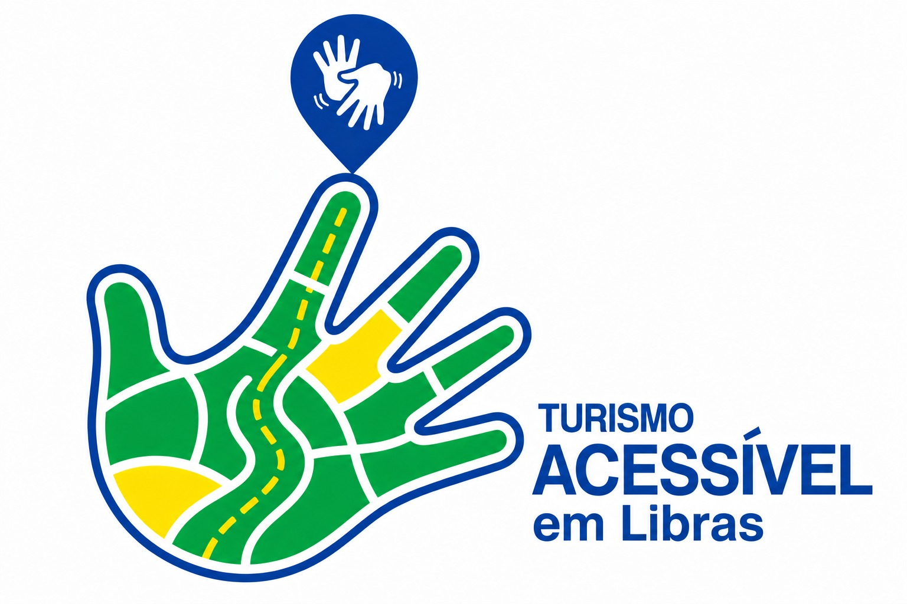

Rio Aquidauana
Conteúdo em Libras sobre o Rio Aquidauana e sua relevância turística para o município.
Vídeo em Libras • sem áudio
Esta página reúne vídeos em Libras e conteúdos audiovisuais relacionados aos atrativos turísticos de Aquidauana e região.
Informação turística com acesso visual, direto e inclusivo.
Conheça os conteúdos audiovisuais e os sinais relacionados aos atrativos, rotas e ações desenvolvidas.
Todos os vídeos desta página foram preparados sem faixa de áudio, priorizando a comunicação visual em Libras.
Conteúdo em Libras sobre o Rio Aquidauana e sua relevância turística para o município.
Vídeo em Libras • sem áudioConteúdo em Libras relacionado à Rota Bioceânica de Capricórnio e à integração turística regional.
Vídeo em Libras • sem áudioConteúdo em Libras apresentando o Morro do Chapéu como referência paisagística e turística.
Vídeo em Libras • sem áudioApresentação em Libras da proposta e da identidade do projeto.
Vídeo em Libras • sem áudioProdução audiovisual do projeto voltada à divulgação, registro e valorização das experiências turísticas acessíveis.
Vídeo em Libras • sem áudioConteúdo em Libras sobre a Igreja Matriz de Aquidauana e sua importância cultural e histórica.
Vídeo em Libras • sem áudioÁrea preparada para reunir registros, edições, materiais de divulgação e outras produções digitais do projeto.
Os vídeos em Libras já estão incorporados ao glossário e podem ser reproduzidos diretamente nesta página.
Espaço destinado à apresentação dos conteúdos de mídia, edição e comunicação digital vinculados às ações do projeto.